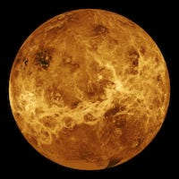
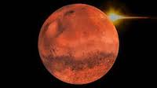
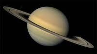
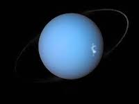

| Picture of the Planet | Name of the Planet | Mass (measured in kg) | Diameter (measured in km) | Mean density (measured in kg/m3) | Escape Velocity (measured in m/s) | Average Distance from the Sun | Rotation period (length of day in Earth days) | Revolutionary period (length of year in Earth days) |
|---|---|---|---|---|---|---|---|---|
|  | Mercury | 3.3 x 1023 | 4879.4 | 5420 | 4300 | 0.387 AU (57,909,175 km) | 58.65 | 87.97 |
|  | Mars | 6.42 x 1023 | 6787 | 3940 | 5000 | 1.524 AU (227,936,640 km) | 1.026 | 686.98 |
|  | Saturn | 5.69 x 1026 | 120660 | 690 | 35600 | 9.537 AU (1,426,725,400 km) | 0.44 (10.2 Earth hours) | 29.46 |
|  | Uranus | 8.68 x 1025 | 51118 | 1290 | 21300 | 19.19 AU (2,870,972,200 km) | 0.72 (17.9 Earth hours)(retrograde) | 30,685 (84 Earth years) |